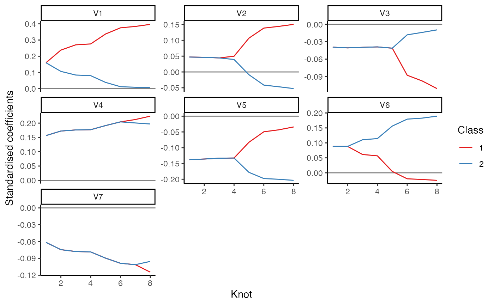
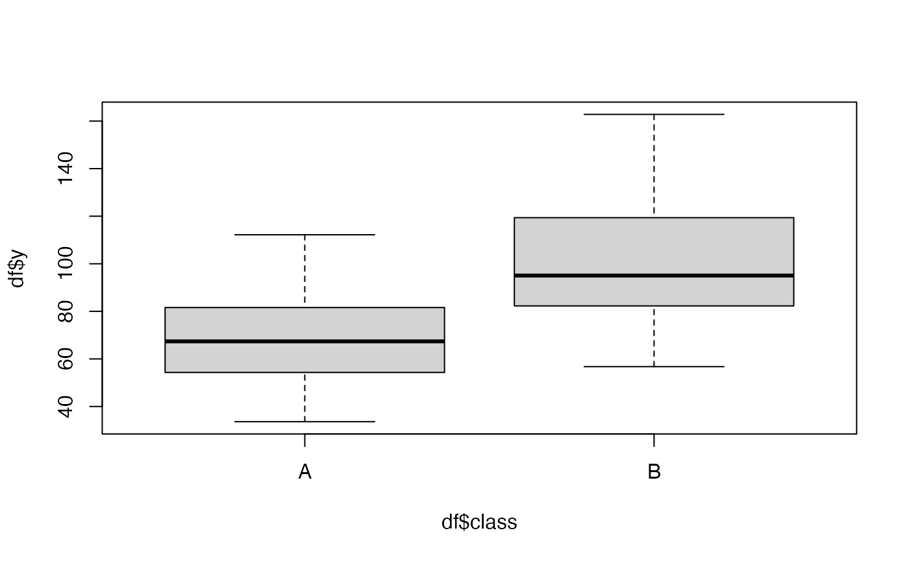
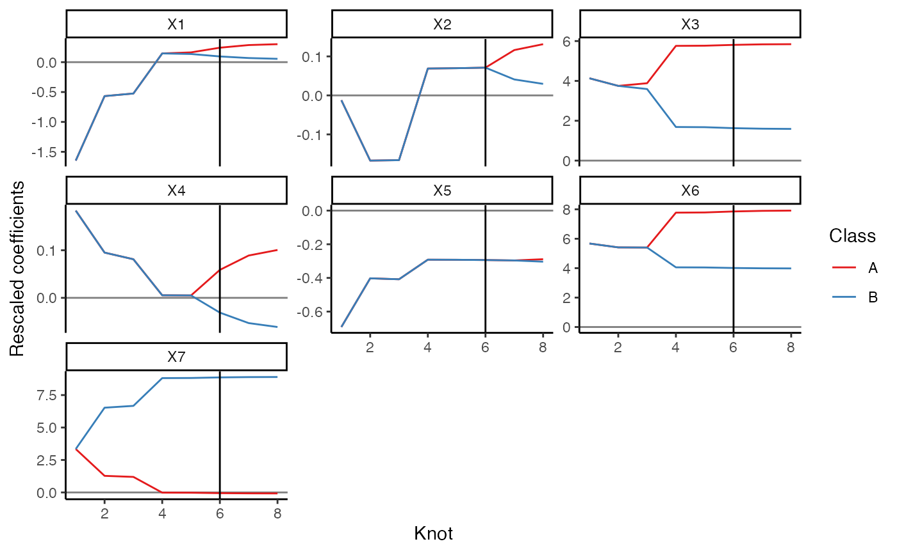
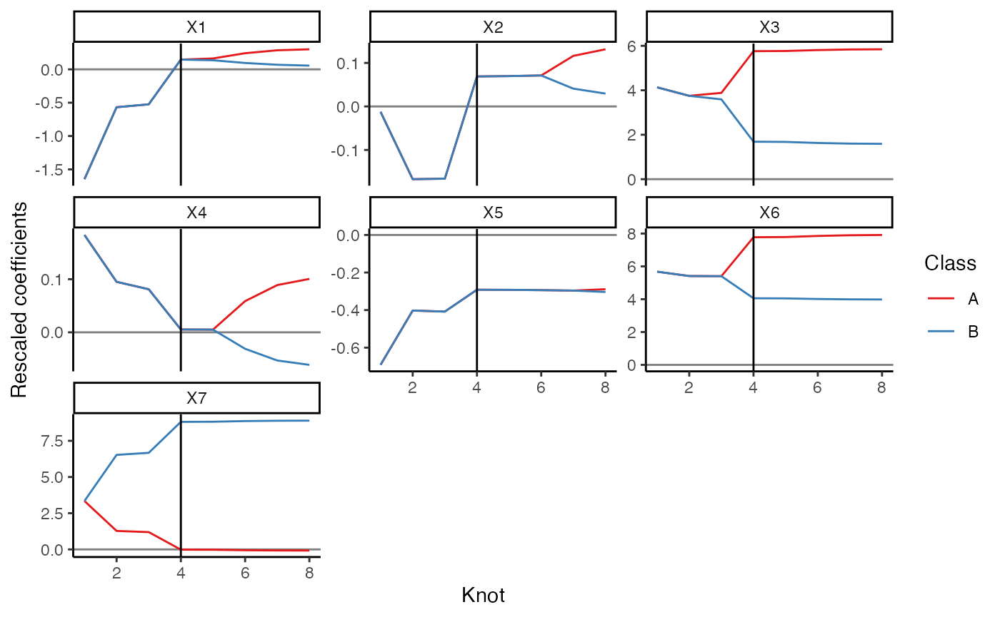
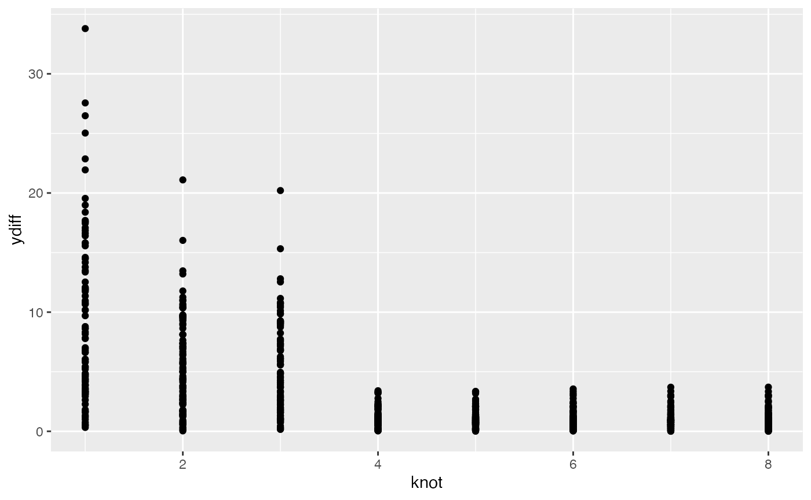
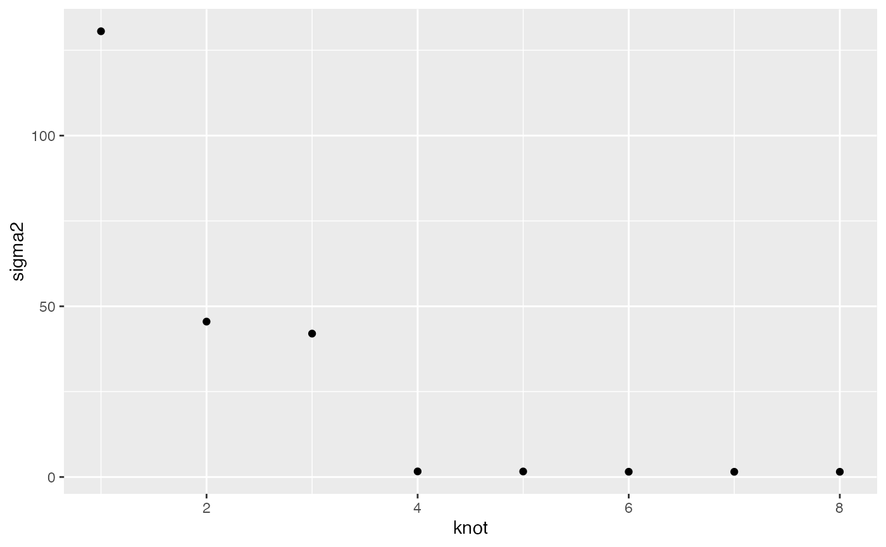
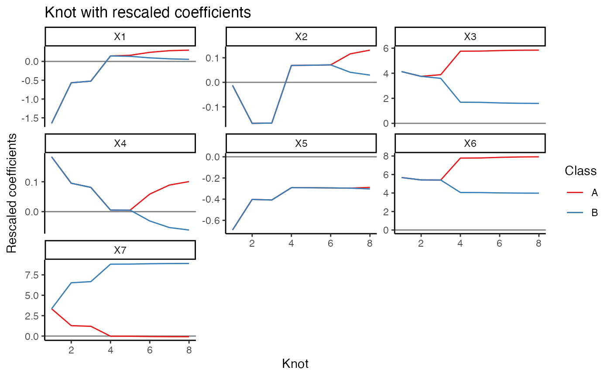
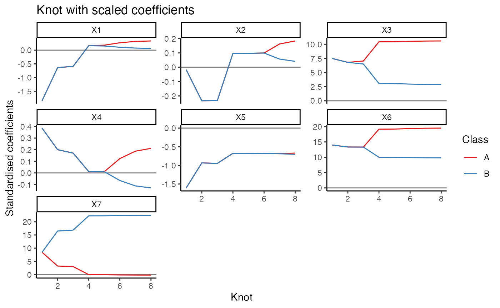
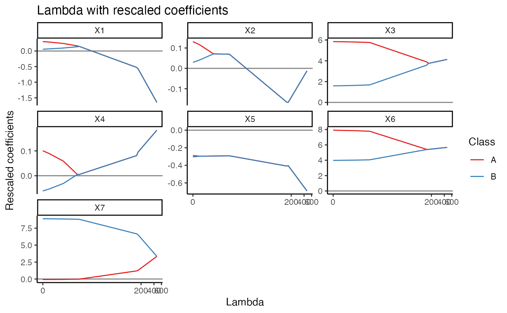
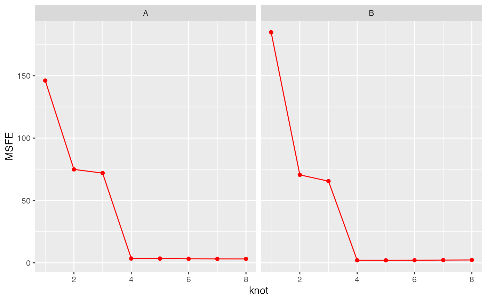

multiclass.RmdThis is for Garth to record how things are working in the simplest cases.
The usual approach would be to have a data frame with predictors, class assignment and response as columns.
p = 7
k = 2
n = 50
beta = c(1,2)
set.seed(1)
X = list(matrix(rnorm(p*n), ncol = p), matrix(rnorm(p*n), ncol = p))
Y = list(rnorm(n), rnorm(n))
df = lists_to_data(Y, X)
str(df)
#> 'data.frame': 100 obs. of 9 variables:
#> $ class: chr "1" "1" "1" "1" ...
#> $ V1 : num -0.626 0.184 -0.836 1.595 0.33 ...
#> $ V2 : num 0.398 -0.612 0.341 -1.129 1.433 ...
#> $ V3 : num -0.6204 0.0421 -0.9109 0.158 -0.6546 ...
#> $ V4 : num 0.4502 -0.0186 -0.3181 -0.9294 -1.4875 ...
#> $ V5 : num 0.409 1.689 1.587 -0.331 -2.285 ...
#> $ V6 : num 0.1362 0.4072 -0.0697 -0.2477 0.6956 ...
#> $ V7 : num 0.894 -1.047 1.971 -0.384 1.654 ...
#> $ y : num -0.708 1.972 -0.09 -0.014 -1.123 ...We can go back the other way if we need to using data_to_lists(). For example
str(data_to_lists(df, class_var = "class", y_var = "y"))
#> List of 2
#> $ y:List of 2
#> ..$ 1: num [1:50, 1] -0.708 1.972 -0.09 -0.014 -1.123 ...
#> .. ..- attr(*, "dimnames")=List of 2
#> .. .. ..$ : chr [1:50] "1" "2" "3" "4" ...
#> .. .. ..$ : chr "y"
#> ..$ 2: num [1:50, 1] -1.455 -0.846 -1.25 0.667 -1.291 ...
#> .. ..- attr(*, "dimnames")=List of 2
#> .. .. ..$ : chr [1:50] "51" "52" "53" "54" ...
#> .. .. ..$ : chr "y"
#> $ X:List of 2
#> ..$ 1: num [1:50, 1:7] -0.626 0.184 -0.836 1.595 0.33 ...
#> .. ..- attr(*, "dimnames")=List of 2
#> .. .. ..$ : chr [1:50] "1" "2" "3" "4" ...
#> .. .. ..$ : chr [1:7] "V1" "V2" "V3" "V4" ...
#> ..$ 2: num [1:50, 1:7] 1.474 0.677 0.38 -0.193 1.578 ...
#> .. ..- attr(*, "dimnames")=List of 2
#> .. .. ..$ : chr [1:50] "51" "52" "53" "54" ...
#> .. .. ..$ : chr [1:7] "V1" "V2" "V3" "V4" ...Now we can use these with our functions. The new function mc_reg() takes in a data frame and calls the underlying function multiclass_reg().
colnames(df)
#> [1] "class" "V1" "V2" "V3" "V4" "V5" "V6" "V7" "y"
set.seed(1)
res1 = mc_reg(df, class = "class", y = "y", scale = FALSE, center_y = FALSE)Now the res1 object has a few things:
names(res1)
#> [1] "fit" "coef" "lambda"
#> [4] "K" "p" "n"
#> [7] "Y_list" "X_list" "Y"
#> [10] "X" "var_indicator" "fitted_values"
#> [13] "residuals" "coef_df" "raw_data"
#> [16] "class_var" "y_var" "scale"
#> [19] "center_y" "class_means_vector" "alpha"
#> [22] "predictions" "scaled_predictions" "lambdas"
#> [25] "bic"In particular, the coef_df data frame has the degrees of freedom included as a column called df.
head(res1$coef_df)
#> # A tibble: 6 × 10
#> # Groups: knot [1]
#> class x_var present scale_factor lambda scaled_coef `rev(as.numeric(l… knot
#> <chr> <chr> <lgl> <dbl> <chr> <dbl> <dbl> <int>
#> 1 1 V1 TRUE 1 7.886379 0.176 0 1
#> 2 1 V2 TRUE 1 7.886379 0.0493 0 1
#> 3 1 V3 TRUE 1 7.886379 -0.0393 0 1
#> 4 1 V4 TRUE 1 7.886379 0.165 0 1
#> 5 1 V5 TRUE 1 7.886379 -0.133 0 1
#> 6 1 V6 TRUE 1 7.886379 0.0921 0 1
#> # … with 2 more variables: coef <dbl>, df <int>
res1$coef_df %>% dplyr::select(knot,df) %>% dplyr::distinct()
#> # A tibble: 8 × 2
#> # Groups: knot [8]
#> knot df
#> <int> <int>
#> 1 1 7
#> 2 2 8
#> 3 3 9
#> 4 4 10
#> 5 5 11
#> 6 6 12
#> 7 7 13
#> 8 8 14What happens when there are missing classes?
df$V1[df$class == "A"] = NA
df$V7[df$class == "B"] = NA
res2 = mc_reg(df)
plot(res2, coef_type = "scaled")
# cv_res2 = multiclass_cv(res2)Can do cross validation:
# cv_res1 = multiclass_cv(res1)
set.seed(1)
res2 = multiclass_reg(Y, X)
# cv_res2 = multiclass_cv(res2)
# all.equal(cv_res1,cv_res2)Great! these two approaches are giving identical results. So we have a data frame method and a list based method.
Now, the scaling (both of the data and coefficients) will be done in the data frame wrapper function, mc_reg(). There is a parameter scale with the default being scale = TRUE.
Some agreed practices around scaling:
This is the code that I’m using to center the Y’s, I think it’s OK (took me an embarassingly long time to figure it out, a simple but general enough approach to demeaning in a class-wise manner with custom y_var and class_var names).
class_var = "class"
y_var = "y"
df = lists_to_data(Y, X)
data = df
data[y_var] = data[y_var]-tapply(data[[y_var]],data[[class_var]], mean, na.rm=TRUE)[data[[class_var]]]Note that (as expected) we get different results under when we scale the variables. The scaling is done in the mc_reg() function, not in the workhorse multiclass_reg() function.
set.seed(1)
res1 = mc_reg(df, class = "class", y = "y", scale = TRUE, center_y = TRUE)
# cv_res1 = multiclass_cv(res1)
set.seed(1)
res2 = multiclass_reg(Y, X)
# cv_res2 = multiclass_cv(res2)
# all.equal(cv_res1,cv_res2)So the procedure in the mc_reg() function now is:
multiclass_reg() functionmulticlass_reg() function on the appropriately scaled datafitted_values. Note that there is a set of fitted values for each penalty parameter, i.e. we have a matrix of fitted values.residuals. Note that there is a set of residuals for each penalty parameter, i.e. we have a matrix of fitted values.So let’s test it out on a sligtly more complex example and see if it’s doing what we think it should do.
p = 7
k = 2
n = 50
set.seed(1)
# Xk <- mvtnorm::rmvnorm(n*2, mean=1:p, sigma=diag(1:p)) %>% round(2)
# yk <- Xk %*% c(0,0,4,0,0,8,0) + rnorm(n*2) + rep(c(0,10), each = n) %>% round(2)
X1 <- mvtnorm::rmvnorm(n, mean=1:p, sigma=diag(1:p)) %>% round(2)
y1 <- X1 %*% c(0,0,6,0,0,8,0) + rnorm(n) + rep(0, each = n) %>% round(2)
X2 <- mvtnorm::rmvnorm(n, mean=1:p, sigma=diag(1:p)) %>% round(2)
y2 <- X2 %*% c(0,0,2,0,0,4,9) + rnorm(n) + rep(10, each = n) %>% round(2)
Xk = rbind(X1,X2)
yk = rbind(y1,y2)
df = data.frame(y = yk, Xk, class = rep(c("A", "B"), each = n))
boxplot(df$y ~ df$class)
plot(df$y ~ df$X3)
lm(y ~ ., data = df) %>% summary()
#>
#> Call:
#> lm(formula = y ~ ., data = df)
#>
#> Residuals:
#> Min 1Q Median 3Q Max
#> -32.514 -7.251 1.031 7.084 26.856
#>
#> Coefficients:
#> Estimate Std. Error t value Pr(>|t|)
#> (Intercept) -1.1845 7.4185 -0.160 0.873
#> X1 -1.7563 1.0945 -1.605 0.112
#> X2 -0.1510 0.8797 -0.172 0.864
#> X3 4.3255 0.6856 6.309 9.97e-09 ***
#> X4 0.2208 0.5799 0.381 0.704
#> X5 -0.4298 0.5532 -0.777 0.439
#> X6 5.6987 0.5100 11.175 < 2e-16 ***
#> X7 3.3894 0.4903 6.913 6.35e-10 ***
#> classB 36.6804 2.5927 14.147 < 2e-16 ***
#> ---
#> Signif. codes: 0 '***' 0.001 '**' 0.01 '*' 0.05 '.' 0.1 ' ' 1
#>
#> Residual standard error: 11.96 on 91 degrees of freedom
#> Multiple R-squared: 0.8319, Adjusted R-squared: 0.8171
#> F-statistic: 56.28 on 8 and 91 DF, p-value: < 2.2e-16OK so that looks good, has a little bit of structure at least. Let’s try a multiclass approach to see if we can recover the unscaled predictions and coefficients.
res = mc_reg(df, class_var = "class", y_var = "y")
plot(res) +
ggplot2::geom_vline(xintercept = res$bic$knot[which.min(res$bic$bic2)]
)
plot(res) +
ggplot2::geom_vline(xintercept = res$bic$knot[which.min(res$bic$bic1)]
)
res$bic
#> # A tibble: 8 × 8
#> # Groups: knot [8]
#> knot df sigma2 n aic bic1 bic2 ebic
#> <int> <dbl> <dbl> <int> <dbl> <dbl> <dbl> <dbl>
#> 1 1 7 131. 100 5.01 5.19 131. 5.38
#> 2 2 8 45.5 100 3.98 4.19 45.9 4.40
#> 3 3 9 42.0 100 3.92 4.15 42.4 4.39
#> 4 4 10 1.64 100 0.692 0.953 2.10 1.22
#> 5 5 11 1.62 100 0.701 0.987 2.12 1.28
#> 6 6 12 1.54 100 0.671 0.983 2.09 1.30
#> 7 7 13 1.52 100 0.682 1.02 2.12 1.36
#> 8 8 14 1.52 100 0.701 1.07 2.17 1.43
# the coefficient data frame (scaled and rescaled)
res$coef_df
#> # A tibble: 112 × 10
#> # Groups: knot [8]
#> class x_var present scale_factor lambda scaled_coef `rev(as.numeric(l… knot
#> <chr> <chr> <lgl> <dbl> <chr> <dbl> <dbl> <int>
#> 1 A X1 TRUE 1.12 467.74… -1.85 0 1
#> 2 A X2 TRUE 1.40 467.74… -0.0173 0 1
#> 3 A X3 TRUE 1.81 467.74… 7.49 0 1
#> 4 A X4 TRUE 2.11 467.74… 0.386 0 1
#> 5 A X5 TRUE 2.32 467.74… -1.60 0 1
#> 6 A X6 TRUE 2.47 467.74… 14.0 0 1
#> 7 A X7 TRUE 2.53 467.74… 8.45 0 1
#> 8 B X1 TRUE 1.12 467.74… -1.85 0 1
#> 9 B X2 TRUE 1.40 467.74… -0.0173 0 1
#> 10 B X3 TRUE 1.81 467.74… 7.49 0 1
#> # … with 102 more rows, and 2 more variables: coef <dbl>, df <int>Well that’s looking pretty great!
res$predictions %>% dplyr::group_by(knot, df) %>%
dplyr::mutate(
ydiff = abs(y-yhat)
) %>%
ggplot2::ggplot() +
ggplot2::aes(x = knot, y = ydiff) +
ggplot2::geom_point()
res$predictions %>% dplyr::group_by(knot, df) %>%
dplyr::summarise(
sigma2 = mean((y-yhat)^2),
df = mean(df),
bic = dplyr::n() * log(sigma2) + df * log(dplyr::n())
) %>%
ggplot2::ggplot() +
ggplot2::aes(x = knot, y = sigma2) +
ggplot2::geom_point()
#> `summarise()` has grouped output by 'knot'. You can override using the `.groups` argument.
What about our fitted values?
plot(res$fitted_values[,1] ~ df$y)Excellent, so it looks like are now outputting fitted values and coefficients on the same scale as the original data, even though internally the data is scaled before being passed through to the multiclass_reg() function.
Should I reverse ordering of the the labelled knots?



OK how does it work with the cross validation method?
# res_cv_traditional = multiclass_cv(res)
res_cv_new = mc_cv(res)
res_cv_new$class_knot_summary %>%
dplyr::mutate(knot = as.numeric(knot)) %>%
ggplot2::ggplot(ggplot2::aes(x = knot, group = class)) +
ggplot2::geom_point(ggplot2::aes(y = MSFE), colour = "red") +
ggplot2::geom_line(ggplot2::aes(y = MSFE), colour = "red") +
ggplot2::facet_wrap(~class)
The MAFE and M methods clearly aren’t working. Need to investigate further.
fit = res
Kfold = 5
nweight = NULL
weighting = TRUE
wtype = "size"
type = "MSFE"
l1length = 100
normalize = TRUE
# can run existing CV on this object
# cv_old = multiclass_cv(fit, Kfold = Kfold,
# nweight = nweight, weighting = weighting,
# wtype = wtype, type = type,
# l1length = l1length, normalize = normalize)
# new CV approach
# assign observations to fold groups
group = fit$raw_data[[fit$class_var]]
fold_id = caret::createFolds(y = factor(group),
k = Kfold,
list = FALSE)
# initialise result storage objects
cv_fits = train = test = list()
# run the mc_reg() function over the Kfolds and
# capture the results
for(fold in 1:Kfold){
train[[fold]] = fit$raw_data[fold_id != fold,]
test[[fold]] = fit$raw_data[fold_id == fold,]
# note the problem here, there's different scaling for each fold
# kind of want to hold the scaling constant across the folds
cv_fits[[fold]] = mc_reg(train[[fold]],
class_var = fit$class_var,
y_var = fit$y_var,
scale = fit$scale,
center_y = fit$center_y)
}
# OK now we need to evaluate performance for each run
# we need to do this on the standardised scale
# as well as the original scale
# the coef_df table has the coefficients on the standardised
# scale as well as the rescaled coefficients
# head(fit$coef_df)
# generate standardised and rescaled predictions for the testing data set
# pull out the X matrix for each class in the test set:
# data_to_lists(fit$coef_df, class_var = )
# data_to_lists(test[[1]], class_var = fit$class_var, y_var = fit$y_var)$X
# an attempt using the standardised approach
forecast_errors = list()
for(i in seq_len(Kfold)){
test_data = test[[i]]
# don't scale the class var nor the dependent variable
scale_cols = colnames(test_data)[!colnames(test_data)%in% c(class_var, y_var)]
col_means = test_data %>% dplyr::ungroup() %>% dplyr::summarise_at(.vars = dplyr::vars(scale_cols), mean, na.rm = TRUE)
col_sds = test_data %>% dplyr::ungroup() %>% dplyr::summarise_at(.vars = dplyr::vars(scale_cols), sd, na.rm = TRUE)
test_data = test_data %>% dplyr::ungroup() %>% dplyr::mutate_at(.vars = dplyr::vars(scale_cols), function(x) (x - mean(x, na.rm = TRUE))/sd(x, na.rm = TRUE))
# sequential observation identifier (required for matching later)
test_data$obs_no = 1:nrow(test_data)
# make the class variable namified (so don't run into issues later)
test_data$class = make.names(test_data$class)
# extract a data frame with the y data
test_y_data = test_data[,c("obs_no", fit$y_var, fit$class_var)]
# define the x testing data frame (removing the y variable)
test_x_data = test_data
test_x_data[[fit$y_var]] = NULL
# convert the x data frame into long form
test_x_data_df = tidyr::gather(test_x_data, key = x_var,
value = x_value, -class, -obs_no)
# calculate the forecast errors by joining the x data in
# with the coefficient date frame, this repeats the
# estiamted coefficients down the data frame for the
# number of observations in each variable and class
forecast_errors[[i]] = dplyr::left_join(cv_fits[[i]]$coef_df,
test_x_data_df,
by = c("class","x_var")) %>%
dplyr::group_by(obs_no, class, knot) %>%
dplyr::summarise(rescaled_forecast = sum(coef * x_value)) %>%
dplyr::ungroup() %>%
dplyr::left_join(test_y_data, by = c("obs_no", "class")) %>%
dplyr::mutate(rescaled_fe = !!rlang::sym(fit$y_var) - rescaled_forecast)
}
#> Note: Using an external vector in selections is ambiguous.
#> ℹ Use `all_of(scale_cols)` instead of `scale_cols` to silence this message.
#> ℹ See <https://tidyselect.r-lib.org/reference/faq-external-vector.html>.
#> This message is displayed once per session.
#> `summarise()` has grouped output by 'obs_no', 'class'. You can override using the `.groups` argument.
#> `summarise()` has grouped output by 'obs_no', 'class'. You can override using the `.groups` argument.
#> `summarise()` has grouped output by 'obs_no', 'class'. You can override using the `.groups` argument.
#> `summarise()` has grouped output by 'obs_no', 'class'. You can override using the `.groups` argument.
#> `summarise()` has grouped output by 'obs_no', 'class'. You can override using the `.groups` argument.
# forecast_errors %>% ggplot(aes(x = ))
# forecast_errors = list()
# for(i in seq_len(Kfold)){
#
# lst = data_to_lists(test[[i]], class_var, y_var)
#
# unadjusted_yhat = lst[[2]] %*% cv_fits[[i]]$coef
#
# test_data = test[[i]]
# # sequential observation identifier (required for matching later)
# test_data$obs_no = 1:nrow(test_data)
# # make the class variable namified (so don't run into issues later)
# test_data$class = make.names(test_data$class)
# # extract a data frame with the y data
# test_y_data = test_data[,c("obs_no", fit$y_var, fit$class_var)]
# # define the x testing data frame (removing the y variable)
# test_x_data = test_data
# test_x_data[[fit$y_var]] = NULL
# # convert the x data frame into long form
# test_x_data_df = tidyr::gather(test_x_data, key = x_var,
# value = x_value, -class, -obs_no)
# # calculate the forecast errors by joining the x data in
# # with the coefficient date frame, this repeats the
# # estiamted coefficients down the data frame for the
# # number of observations in each variable and class
# forecast_errors[[i]] = dplyr::left_join(cv_fits[[i]]$coef_df,
# test_x_data_df,
# by = c("class","x_var")) %>%
# dplyr::group_by(obs_no, class, knot) %>%
# dplyr::summarise(rescaled_forecast = sum(rescaled_coef * x_value)) %>%
# dplyr::ungroup() %>%
# dplyr::left_join(test_y_data, by = c("obs_no", "class")) %>%
# dplyr::mutate(rescaled_fe = !!rlang::sym(fit$y_var) - rescaled_forecast)
# }
#
# # OK now we have the forecast_error list for each fold. Let's combine it
# # into a single data frame
#
# fe = dplyr::bind_rows(forecast_errors, .id = "fold") %>%
# dplyr::mutate(knot = as.numeric(knot))This still works because I haven’t removed any objects from the output, only added new objects. However, it doesn’t take in to account any rescaling. So we need to do that.